Crie um programa que exiba: Olá, Mundo! Bem-vindo à programação em C.
Explicação:
Esta atividade é o primeiro contato com a linguagem C. Ela consiste em criar um programa que apenas mostre uma mensagem na tela, sem precisar receber informações do usuário. O objetivo é entender como um programa em C é estruturado e como utilizar o comando responsável por exibir textos.
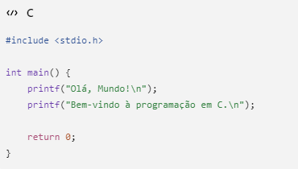
Solicite o nome e a idade do usuário e exiba uma mensagem de apresentação.
Explicação:
Nesta atividade, o programa solicita que o usuário informe seu nome e sua idade. Depois de receber essas informações, ele exibe uma mensagem de apresentação utilizando os dados digitados. Essa atividade demonstra como um programa pode interagir com o usuário por meio da entrada e da saída de dados.
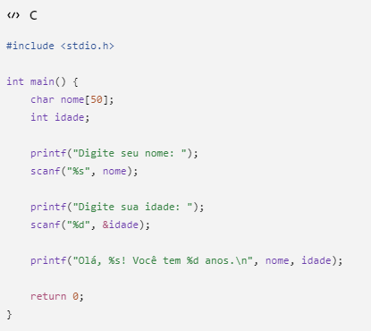
Leia dois números inteiros e exiba a soma.
Explicação:
O programa solicita dois números inteiros ao usuário, realiza a soma entre eles e apresenta o resultado na tela. Essa atividade introduz as operações matemáticas básicas utilizando variáveis.
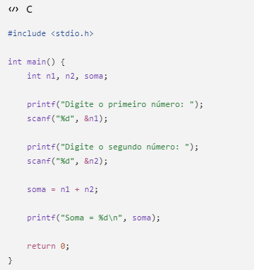
Leia dois números e mostre soma, subtração, multiplicação e divisão inteira.
Explicação:
Nesta atividade, o programa recebe dois números inteiros e realiza as quatro operações matemáticas básicas: soma, subtração, multiplicação e divisão inteira. Depois, exibe todos os resultados na tela.
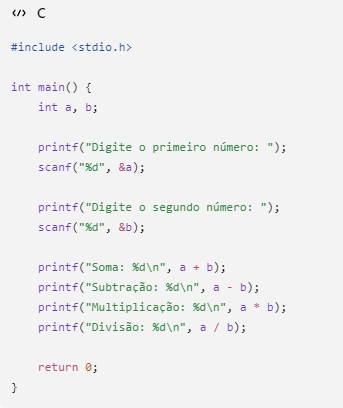
Leia um número inteiro e mostre seu antecessor e sucessor.
Explicação:
O programa solicita um número inteiro e calcula qual é o seu antecessor e o seu sucessor. Em seguida, apresenta essas informações na tela.
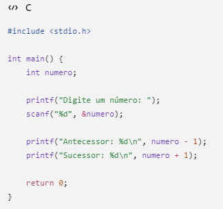
Leia duas notas (float) e calcule a média
Explicação:
O programa solicita duas notas do tipo float, calcula a média aritmética entre elas e exibe o resultado ao usuário.
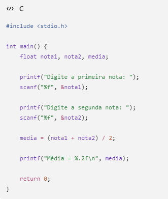
Leia uma temperatura em Celsius e converta usando F=(C*9/5)+32.
Explicação:
O programa solicita a base e a altura de um retângulo, calcula sua área utilizando a fórmula matemática correspondente e apresenta o resultado.
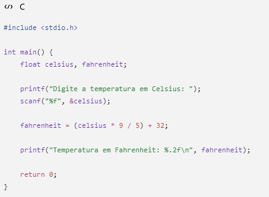
Leia base e altura e calcule a área.
Explicação:
O programa solicita o valor recebido por hora e a quantidade de horas trabalhadas. Em seguida, multiplica esses valores para calcular o salário total.
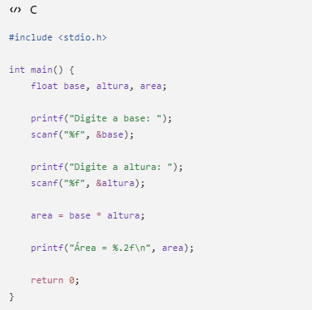
Leia valor da hora e quantidade de horas trabalhadas. Calcule o salário
Explicação:
Nesta atividade, o usuário informa uma temperatura em graus Celsius. O programa utiliza a fórmula de conversão para calcular a temperatura correspondente em Fahrenheit e exibe o resultado.
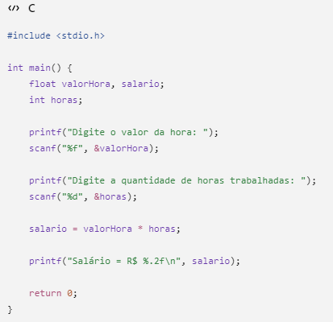
Leia dois números e mostre soma, subtração, multiplicação, divisão e resto da divisão
Explicação:
O programa funciona como uma calculadora simples. Após receber dois números inteiros, realiza a soma, subtração, multiplicação, divisão e o cálculo do resto da divisão, exibindo todos os resultados.
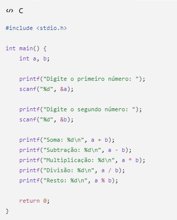
Solicite nome, idade, nota 1 e nota 2. Exiba uma ficha do aluno contendo os dados e a média final
Explicação:
Neste desafio, o programa solicita o nome, a idade e duas notas do aluno. Depois, calcula a média das notas e exibe uma ficha organizada com todas as informações fornecidas pelo usuário
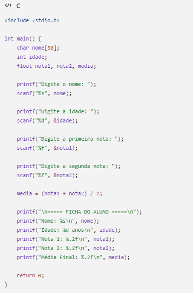